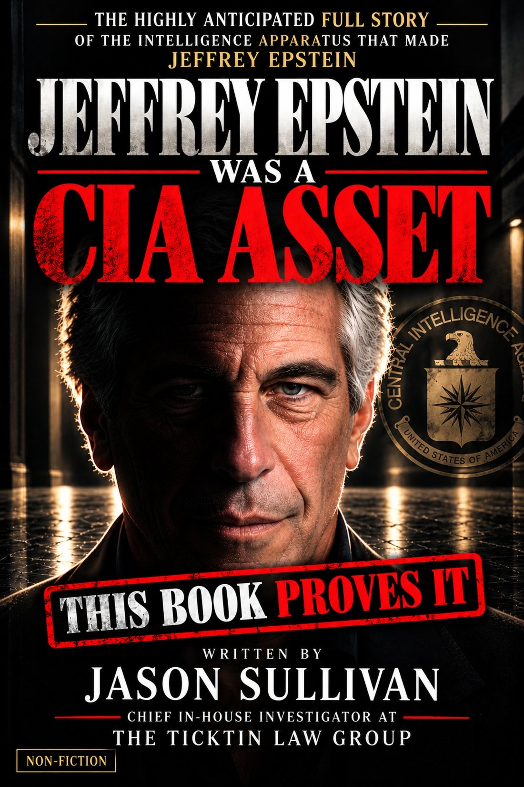
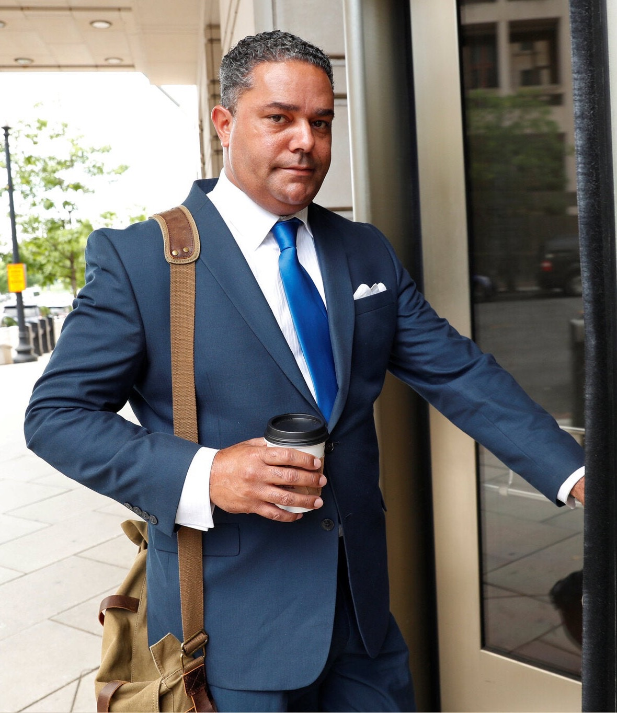
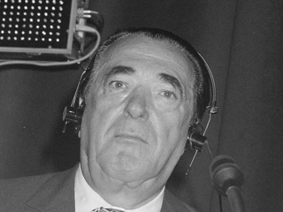
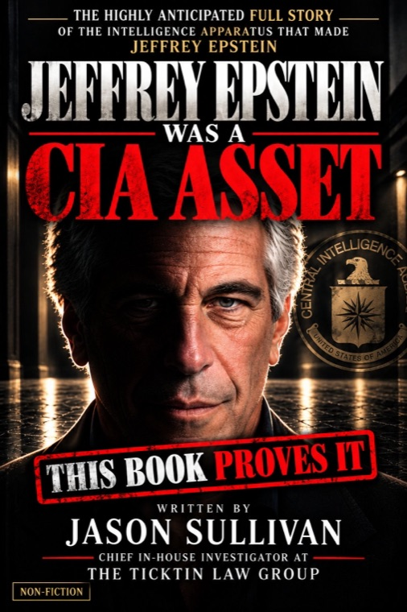

Primary source
The documents themselves: court filings, congressional reports, declassified records, financial and corporate filings.
Classified
File 0001 · Eyes only
By Jason Sullivan
Sound on
Forthcoming ◆ Non‑Fiction
The highly anticipated full story of the intelligence apparatus that spotted, recruited and deployed him, from the investigator who broke the Epstein “missing minute.”


The author, Jason Sullivan, entering the E. Barrett Prettyman United States Courthouse in Washington, D.C., in June 2018The premise
He is the instrument in which the intelligence apparatus that deployed him becomes visible.
Every prior account of Jeffrey Epstein begins at the end, with the girls, the flight logs and the famous names, and works backward without ever reaching an origin. Jeffrey Epstein Was A CIA Asset starts at the true beginning.
It traces the covert intelligence and financial apparatus the United States built during World War II, how it was funded outside congressional oversight for eight decades, and how a boy from a working-class family in Brooklyn was identified, groomed and deployed as one of its most valuable financial and blackmail operatives.
Everyone has been asking the wrong question: “Who killed Jeffrey Epstein?” The correct question is “Who made him?”
This machine did not die in a jail cell on August 10, 2019. It is still running.
From the introduction
The chain of custody
How the book follows one man from a Brooklyn classroom to a federal jail cell, file by file.
An eleven-year-old enters Mark Twain Junior High in Coney Island, a 35-minute drive from Columbia, the year Donald Barr, the former OSS officer who built Columbia’s Science Honors Program, leaves Columbia to run the Dalton School.
ClassifiedDonald Barr, by then headmaster of Dalton, puts the twenty-one-year-old Epstein on his faculty with no teaching credentials and no college degree.
ClassifiedTwo years later Epstein lands on Wall Street, on the desk the book ties to the BCCI-ICIC accounts behind clandestine arms finance.
ClassifiedHe is passed to the operators of those trades. Around 1980 he is introduced to Douglas Leese, the British defense contractor who was one of the architects of the Al-Yamamah arms deal. Leese teaches him the shadow side of clandestine arms finance.
ClassifiedNext comes Adnan Khashoggi, the Saudi arms broker the book calls the CIA’s principal foreign agent and a master of kompromat. Epstein’s operation would clone his playbook “with near-identical fidelity.”
Classified
Then the media baron Robert Maxwell takes him under his wing, deploys him further and pairs him with his own daughter, Ghislaine.
ClassifiedKhashoggi’s yacht is sold to Donald Trump. The same year, Jeffrey Epstein appears in Trump’s orbit. The book argues the two arrivals were no coincidence.
ClassifiedOn August 10, 2019, Epstein dies in federal custody. The book shows why the apparatus that made him did not die with him.
OpenThe evidence
The book does not ask for trust. It grades every claim by the strength of its source, so the reader always knows what is documented and what is argued.
The documents themselves: court filings, congressional reports, declassified records, financial and corporate filings.
Published accounts and testimony, weighed for reliability and flagged with their caveats.
Reasoned conclusions, labeled as inference and never dressed up as established fact.
Where the record stops, the book says so, and it lists the claims it does not make.
July 7, 2025
The Justice Department released what it called raw footage from outside Jeffrey Epstein’s cell on the night he died. Jason Sullivan found the gap: the timestamp jumped past midnight, and a minute was gone.
His outlet, Unleashed.news, was the first news outlet to report it, and The Gateway Pundit ran his report within half an hour. By the next day the Attorney General was fielding questions about the missing minute at a Cabinet meeting.
It was the thread. This book is what he found when he pulled it.
The record · July 7, 2025
Unleashed.news reported the missing minute at 12:21 PM Eastern, and The Gateway Pundit ran Jason Sullivan’s report at 12:45 PM. The New York Times followed that afternoon. CNN and Newsmax got to it that evening.
Jason Sullivan posts the clip on X: the Justice Department’s “raw” jail video jumps from 11:58:58 PM to 12:00:00 AM. The post
Runs his report: “DOJ Caught Cutting 60 Seconds from Newly Released Epstein 10 Hour Jail Cell Tape!” The article
Its story on the Justice Department memo notes that the video “appears to be missing a minute just before midnight.” The article
On The Lead with Jake Tapper, Axios reporter Alex Isenstadt says “some people on the internet are picking up on” a missing minute. The transcript
“DOJ Video Disputes Epstein Conspiracy Theories” says the video “appears to jump ahead one minute at exactly midnight.” The article
The next day · July 8, 2025
“Missing Minute in Jeffrey Epstein Video Raises Questions.” The article
17 h 50 min laterAt President Trump’s Cabinet meeting, Attorney General Pam Bondi is asked about the missing minute. Read what she said
The next morning“One Minute Is Missing From the Epstein Video.” The article
26 h 57 min laterAll times Eastern, as each publisher recorded them: the X post’s time stamp, each article’s published time, and the time stamp in CNN’s transcript. The Internet Archive saved The Gateway Pundit’s report at 12:48 PM, three minutes after it went up. The New York Times time is when its article first went up. The Cabinet meeting began at 11:00 AM.

Pay what you want until Election Day
Available now
Until Election Day, November 3, donate any amount from $1 and get the book, or from $10 for the book with the entire Master Claims document. Your copy is emailed to you at release: Tuesday, October 20, 2026, at 8 AM Eastern.
The book is out now. Get the ebook, or the ebook with the entire Master Claims document, and start reading today: your copy is emailed to you within minutes of checkout.
Continue to support this author’s work. Cancel anytime.
From $1$14.99 from Nov 4$14.99
From $10$19.99 from Nov 4$19.99
You choose the amount here (the ebook from $1, the ebook plus the entire Master Claims document from $10), and Square’s secure checkout opens for exactly that amount. Square’s checkout also asks for your phone number for the receipt. Your copy is emailed to the address you enter there and opens in our protected online reader, for you alone. A monthly donation repeats each month until you cancel, which you can do at any time at theciaasset.com/cancel; your copy comes with the first one. Donations go directly to the author and are not tax-deductible. All donations are final: no refunds.
Secure checkout by Square, which also asks for your phone number for the receipt. Your copy is emailed to the address you enter at checkout and opens in our protected online reader, for you alone. All sales are final: no refunds.
Clearance levels
Readers: join the list for launch news and the first public excerpt, sent the moment they are ready.
Advance preview copies are available only to credentialed members of the media. Journalists, editors, producers, podcast hosts and book reviewers: choose your role, then verify your credentials. Every request is reviewed before access is granted.
Press, podcasts & rights
For journalists, producers, podcast hosts, book reviewers, books desks and literary agents.
TV, radio and podcast producers: request an interview with Jason Sullivan.
Request an interview → 02Available only to credentialed members of the media: journalists, editors, producers, podcast hosts and book reviewers. Every request is verified.
Request a preview copy → 03Literary agents and publishers: representation and rights inquiries.
Send an inquiry →Jason Sullivan is an investigator and open-source intelligence operator who has spent more than a decade behind the scenes of American politics. Special Counsel Robert Mueller’s team interrogated him over whether he had been a go-between for Roger Stone and WikiLeaks founder Julian Assange before he testified to a federal grand jury, and January 6th Committee counsel later interviewed him. He was never charged. When The New York Times, Rolling Stone and MSNBC wrote about him, he let his lawyers do the talking. Since 2022 he has been Chief Investigator at The Ticktin Law Group for President Trump’s longtime friend and attorney Peter Ticktin. In July 2025 he broke the Epstein “missing minute” story. His first book, Jeffrey Epstein Was A CIA Asset, asks who made Jeffrey Epstein.
Jason Sullivan at the federal courthouse in Washington, D.C. Photo: Kevin Lamarque/Reuters.
Download photo